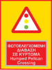

Loading...

Warning sign with supplementary plate. Pelican crossing on speed hump
⚠ Warning Signs
📖 Description
This sign warns of a Pelican crossing — a pedestrian crossing controlled by traffic lights with a push button — located on a raised speed hump. Drivers must slow down, watch for pedestrians, and be ready to stop when the signal changes.